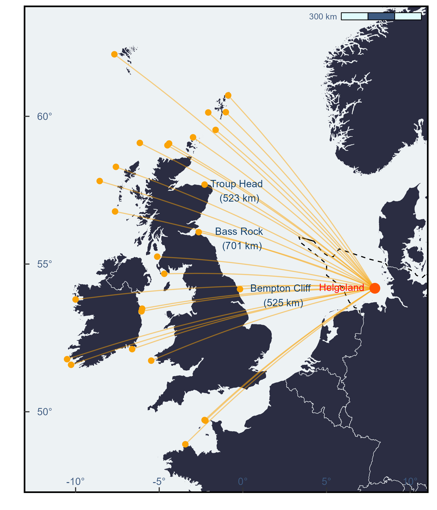

reference<-data.frame(name="reference",lat=54.18,long=7.89)Distance from point
R
ggplot2
English
Y2024
tracking
Calculate distance from a point.
Intro
This post is about how to calculate distance from a point
Data
Identify your reference point
Convert it to a spatial object
reference_sp<-data.frame(lat=reference$lat,
lon=reference$lon)
sp::coordinates(reference_sp)<-~lon+latThen give the information of the other points to compare
colonies_sub<-data.frame(name=c("Ailsa Craig","Barra Head","Bass Rock","Bempton Cliff","Bull Rock","Clare Island", "Fair Isle", "Flannan Isles","Foula","Grassholm Island","Great Saltee", "Helgoland" , "Hermaness", "Ireland’s Eye", "Lambay", "Les Etac/Alderrney","Little Skellig","Mykinesholmur","Noss" ,"Ortac","Rouzic Island","Scar Rocks","St. Kilda","Sula sgeir","Sule Skerry","Sule Stack","Troup Head","Westray"),
colony_lat=c(55.25,56.78,56.08,54.15,51.59,53.80,59.54,58.29,60.13,51.73,52.12,54.18,60.71,53.40,53.49,49.70,51.78,62.10,60.14,49.72,48.90,54.67,57.81,59.10,59.08,59.02,57.69,59.29),
colony_long=c(-5.12,-7.64,-2.64,-0.17,-10.27,-10.00,-1.63,-7.59,-2.07,-5.48,-6.62,7.89,-0.88,-6.06,-6.02,-2.24,-10.51,-7.68,-1.02,-2.29,-3.44,-4.70,-8.56,-6.16,-4.41,-4.51,-2.29,-2.98))head(colonies_sub)Convert this data frame into a spatial object
colonies_sp<-data.frame(lat=colonies_sub$colony_lat,
lon=colonies_sub$colony_long)
sp::coordinates(colonies_sp)<-~lon+latGive both objects the same coordinate system to make sure they are comparable
sp::proj4string(reference_sp)= sp::CRS("+init=epsg:4326")
sp::proj4string(colonies_sp)= sp::CRS("+init=epsg:4326")Calculate
Using the funcion distm from the package geosphere the distance can be calculated. Give the argument distHaversine. Read here what is Haversine.
maxdist_m<-(geosphere::distm(reference_sp,colonies_sp,fun = geosphere::distHaversine))
maxdist_km<-round(maxdist_m/1000,digits=2)Load the package tidyverse to make some data wrangling
library(tidyverse)Use the function pivot_longer to reorder the information
distances<-as.data.frame(maxdist_km)%>%
pivot_longer(cols=c(V1:V28))Assign to the data frame
colonies_sub$distance<-distances$valueHere are the results from the distance between the point and the reference point
head(colonies_sub)Plot
Load the shapefiles from my package GermanNorthSea
library(GermanNorthSea)Transform them to the assigned CRS using the package sf
library(sf)Here I used 4326
German_land<-st_transform(GermanNorthSea::German_land, 4326)
German_EEZ<-st_transform(GermanNorthSea::German_EEZ, 4326)
German_SCA<-st_transform(GermanNorthSea::German_natura, 4326)Base plot
To create a plot use ggplot2
library(ggplot2)First using a base plot of the North Sea, highlighting the economic exclusive zone of Germany
base_plot<-ggplot()+
geom_sf(data = German_EEZ, colour = "black", fill= NA, lwd = 0.5,linetype="dashed")+
geom_sf(data = German_land, colour = '#edf2f4', fill = '#2b2d42')+
coord_sf(xlim = c(-12, 10),ylim = c(48, 63))+
scale_x_continuous(breaks = c(-10,-5,0,5,10,20,30),labels = function(x) paste0(x, '\u00B0')) +
scale_y_continuous(breaks = c(45,50,55,60,65,70,75),labels = function(x) paste0(x, '\u00B0')) +
theme_bw()+
xlab('Longitude')+ylab('Latitude')+
theme(
panel.background = element_rect(fill = '#edf2f4'),
panel.grid.major = element_blank(),
panel.grid.minor = element_blank(),legend.position='none',
panel.border = element_rect(colour = "black", fill=NA, size=1.5),
legend.spacing.y = unit(0.05, 'cm'),
legend.text=element_text(size=10),
legend.background = element_rect(fill='transparent',colour ="transparent"),
legend.box.background = element_rect(fill='transparent',colour ="transparent"),
legend.key = element_rect(fill = "transparent", colour = "transparent"),
axis.text.x = element_text(size=10,vjust = 10,color='#3d5a80'),
axis.text.y = element_text(color='#3d5a80',size=10,margin = margin(0,-1.00,0,1, unit = 'cm')),
axis.title = element_blank(),
axis.ticks.length=unit(-0.20, "cm"),
)
base_plotPlot with curves
Add the reference point to be able to plot
colonies_sub$reference_long<-reference$lon
colonies_sub$reference_lat<-reference$latUse the function geom_curve to create lines between the reference point and the other points.
curves_plot<-base_plot+
geom_curve(data= subset(colonies_sub,colonies_sub$name != 'Helgoland'),
aes(x = reference_long, y = reference_lat,
xend = colony_long, yend = colony_lat),
color = '#faa307',
curvature = 0.05, alpha = 0.5)
curves_plotAdd the other points using geom_point
points_plot<-curves_plot+
geom_point(data=colonies_sub,
aes(x = colony_long,y= colony_lat),
color='#faa307', fill='#ffba08',shape=16,size=2,stroke=1.5)+
geom_point(data=reference,
aes(x = long,y= lat),
color='#ff5400', fill='#ff5400',shape=16,size=4,stroke=1.5)
points_plotletters_plot<-points_plot+
annotate("text", y = 54.15-0.21, x = -0.17+2.5,
label = "Bempton Cliff \n (525 km)",
size=3.5,color='#0d3b66')+
annotate("text", y = 56.08-0.21, x = -2.64+2.5,
label = "Bass Rock \n (701 km)",
size=3.5,color='#0d3b66')+
annotate("text", y = 57.69-0.21, x = -2.29+2.0,
label = "Troup Head \n (523 km)",
size=3.5,color='#0d3b66')+
annotate("text", y = 54.18-0.21, x = 7.89-1.9,
label = "Helgoland \n",
size=3.5,color='red')+
NULL
letters_plot
Resources
Alternatively using the package nngeo
Check my package GermanNorthSea
How to make maps in R blogpost